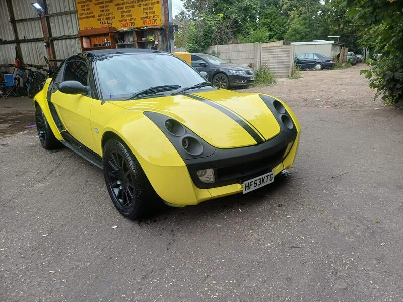
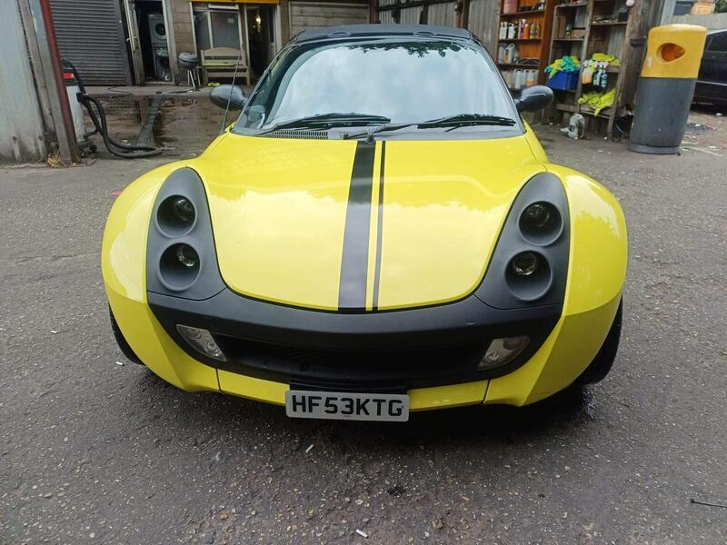
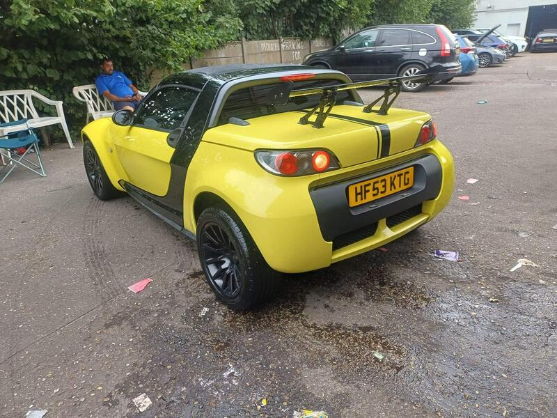
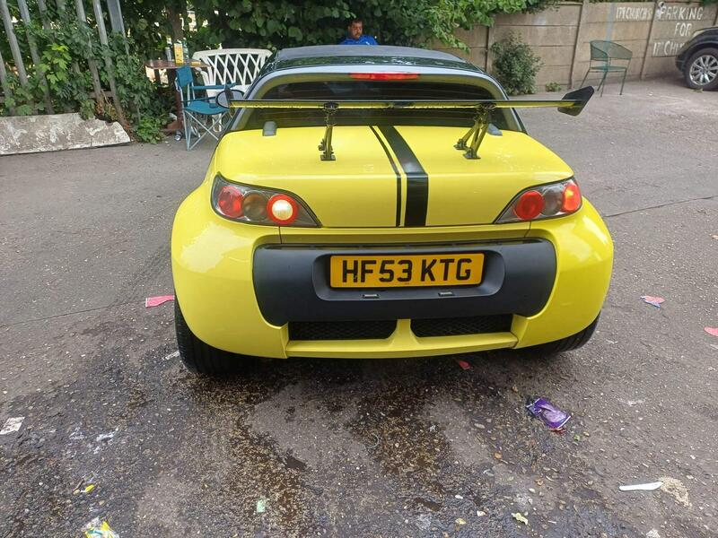

← All 25Ranked #25 of 25




Seller photos from the AutoTrader ad.
✓ Checked 13 Oct
2003 · Smart Roadster
Smart Roadster 0.7
The replacement engine is a plus. Get it MOT'd first.
£2,995143,611 miles · Upper Edmonton · 38 mi from GU7
View on AutoTrader ↗Key facts
| Price | £2,995 |
|---|---|
| Year | 2003 |
| Miles | 143,611 |
| Model | Smart Roadster 0.7 |
| Colour | Yellow |
| Registration | 2003 (53 reg) |
| Owners | 10 owners |
| Service history | Not stated |
| MOT | June 2026 per ad, so probably expired |
| Seller | Trade |
| Location | Upper Edmonton |
| From GU7 | 38 mi (AutoTrader) |
| Checked | 13 Oct 2026 |
Why buy it
- Replacement engine with 54k miles, with receipts (ad)
- Air con, heated seats
Things to check
MOT probably expired
Check for water leaks
- Smart Roadster 452 weak spots
Galvanised Tridion cell; check underbody, subframe and rear arches. Chronic water leaks reaching the SAM module (replacement £400+); turbo failures around 70–90k miles; jerky automated gearbox.
Seller says (extract)
“central locking, power steering, air bags, air con, electric roof, new engine done only 54000 miles with receipts, excellent condition throughout, drives very very well, mot until June 2026, leather interior, heated seats, highly collectable, petrol, ulez compliant, 1st to see will buy…”